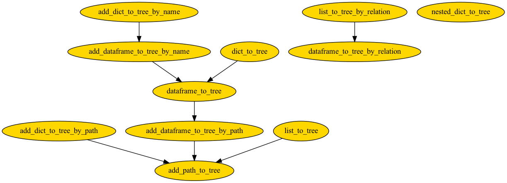

✨ Construct¶
Construct Tree from list, dictionary, and pandas DataFrame.
To decide which method to use, consider your data type and data values.
Construct Tree from |
Using full path |
Using parent-child relation |
Add node attributes |
|---|---|---|---|
List |
list_to_tree |
list_to_tree_by_relation |
No |
Dictionary |
dict_to_tree |
nested_dict_to_tree |
Yes |
DataFrame |
dataframe_to_tree |
dataframe_to_tree_by_relation |
Yes |
To add attributes to existing tree,
Add attributes from |
Using full path |
Using node name |
|---|---|---|
String |
add_path_to_tree |
NA |
Dictionary |
add_dict_to_tree_by_path |
add_dict_to_tree_by_name |
DataFrame |
add_dataframe_to_tree_by_path |
add_dataframe_to_tree_by_name |
Note
These functions are not standalone functions. Under the hood, they have the following dependency,
Functions:
|
Add attributes to tree, return new root of tree. |
|
Add nodes and attributes to tree in-place, return root of tree. |
|
Add attributes to tree, return new root of tree. |
|
Add nodes and attributes to tree in-place, return root of tree. |
|
Add nodes and attributes to existing tree in-place, return node of added path. |
|
Construct tree from pandas DataFrame using path, return root of tree. |
|
Construct tree from pandas DataFrame using parent and child names, return root of tree. |
|
Construct tree from nested dictionary using path, |
|
Construct tree from list of path strings. |
|
Construct tree from list of tuple containing parent-child names. |
|
Construct tree from nested recursive dictionary. |
- bigtree.tree.construct.add_dataframe_to_tree_by_name(tree: Node, data: DataFrame, name_col: str = '', attribute_cols: list = [], join_type: str = 'left')¶
Add attributes to tree, return new root of tree.
name_col and attribute_cols specify columns for node name and attributes to add to existing tree. If columns are not specified, the first column will be taken as name column and all other columns as attributes.
Function can return all existing tree nodes or only tree nodes that are in the input data node names. Input data node names that are not existing node names will be ignored. Note that if multiple nodes have the same name, attributes will be added to all nodes sharing same name.
>>> import pandas as pd >>> from bigtree import add_dataframe_to_tree_by_name, print_tree >>> root = Node("a") >>> b = Node("b", parent=root) >>> name_data = pd.DataFrame([ ... ["a", 90], ... ["b", 65], ... ], ... columns=["NAME", "age"] ... ) >>> root = add_dataframe_to_tree_by_name(root, name_data) >>> print_tree(root, attr_list=["age"]) a [age=90] └── b [age=65]
- Parameters:
tree (Node) -- existing tree
data (pandas.DataFrame) -- data containing node name and attribute information
name_col (str) -- column of data containing name information, if not set, it will take the first column of data
attribute_cols (list) -- column(s) of data containing node attribute information, if not set, it will take all columns of data except path_col
join_type (str) -- join type with attribute, default of 'left' takes existing tree nodes, if join_type is set to 'inner' it will only take tree nodes with attributes and drop the other nodes
- Returns:
(Node)
- bigtree.tree.construct.add_dataframe_to_tree_by_path(tree: Node, data: DataFrame, path_col: str = '', attribute_cols: list = [], sep: str = '/', duplicate_name_allowed: bool = True) Node¶
Add nodes and attributes to tree in-place, return root of tree.
path_col and attribute_cols specify columns for node path and attributes to add to existing tree. If columns are not specified, path_col takes first column and all other columns are attribute_cols
- Path in path column should contain Node name, separated by sep.
For example: Path string "a/b" refers to Node("b") with parent Node("a").
Path separator sep is for the input path_col and can be different from that of existing tree.
- Path in path column can start from root node name, or start with sep.
For example: Path string can be "/a/b" or "a/b", if sep is "/".
- All paths should start from the same root node.
For example: Path strings should be "a/b", "a/c", "a/b/d" etc. and should not start with another root node.
>>> import pandas as pd >>> from bigtree import add_dataframe_to_tree_by_path, print_tree >>> root = Node("a") >>> path_data = pd.DataFrame([ ... ["a", 90], ... ["a/b", 65], ... ["a/c", 60], ... ["a/b/d", 40], ... ["a/b/e", 35], ... ["a/c/f", 38], ... ["a/b/e/g", 10], ... ["a/b/e/h", 6], ... ], ... columns=["PATH", "age"] ... ) >>> root = add_dataframe_to_tree_by_path(root, path_data) >>> print_tree(root, attr_list=["age"]) a [age=90] ├── b [age=65] │ ├── d [age=40] │ └── e [age=35] │ ├── g [age=10] │ └── h [age=6] └── c [age=60] └── f [age=38]
- Parameters:
tree (Node) -- existing tree
data (pandas.DataFrame) -- data containing node path and attribute information
path_col (str) -- column of data containing path_name information, if not set, it will take the first column of data
attribute_cols (list) -- columns of data containing node attribute information, if not set, it will take all columns of data except path_col
sep (str) -- path separator for input path_col
duplicate_name_allowed (bool) -- indicator if nodes with duplicated Node name is allowed, defaults to True
- Returns:
(Node)
- bigtree.tree.construct.add_dict_to_tree_by_name(tree: Node, path_attrs: dict, join_type: str = 'left') Node¶
Add attributes to tree, return new root of tree. Adds to existing tree from nested dictionary,
key: name,value: dict of attribute name and attribute value.Function can return all existing tree nodes or only tree nodes that are in the input dictionary keys. Input dictionary keys that are not existing node names will be ignored. Note that if multiple nodes have the same name, attributes will be added to all nodes sharing same name.
>>> from bigtree import Node, add_dict_to_tree_by_name, print_tree >>> root = Node("a") >>> b = Node("b", parent=root) >>> name_dict = { ... "a": {"age": 90}, ... "b": {"age": 65}, ... } >>> root = add_dict_to_tree_by_name(root, name_dict) >>> print_tree(root, attr_list=["age"]) a [age=90] └── b [age=65]
- Parameters:
tree (Node) -- existing tree
path_attrs (dict) -- dictioning containing node name and attribute information, key: node name, value: dict of node attribute name and attribute value
join_type (str) -- join type with attribute, default of 'left' takes existing tree nodes, if join_type is set to 'inner' it will only take tree nodes that are in path_attrs key and drop others
- Returns:
(Node)
- bigtree.tree.construct.add_dict_to_tree_by_path(tree: Node, path_attrs: dict, sep: str = '/', duplicate_name_allowed: bool = True) Node¶
Add nodes and attributes to tree in-place, return root of tree. Adds to existing tree from nested dictionary,
key: path,value: dict of attribute name and attribute value.- Path should contain Node name, separated by sep.
For example: Path string "a/b" refers to Node("b") with parent Node("a").
Path separator sep is for the input path and can be different from that of existing tree.
- Path can start from root node name, or start with sep.
For example: Path string can be "/a/b" or "a/b", if sep is "/".
- All paths should start from the same root node.
For example: Path strings should be "a/b", "a/c", "a/b/d" etc. and should not start with another root node.
>>> from bigtree import Node, add_dict_to_tree_by_path, print_tree >>> root = Node("a") >>> path_dict = { ... "a": {"age": 90}, ... "a/b": {"age": 65}, ... "a/c": {"age": 60}, ... "a/b/d": {"age": 40}, ... "a/b/e": {"age": 35}, ... "a/c/f": {"age": 38}, ... "a/b/e/g": {"age": 10}, ... "a/b/e/h": {"age": 6}, ... } >>> root = add_dict_to_tree_by_path(root, path_dict) >>> print_tree(root) a ├── b │ ├── d │ └── e │ ├── g │ └── h └── c └── f
- Parameters:
tree (Node) -- existing tree
path_attrs (dict) -- dictioning containing node path and attribute information, key: node path, value: dict of node attribute name and attribute value
sep (str) -- path separator for input path_attrs
duplicate_name_allowed (bool) -- indicator if nodes with duplicated Node name is allowed, defaults to True
- Returns:
(Node)
- bigtree.tree.construct.add_path_to_tree(tree: Node, path: str, sep: str = '/', duplicate_name_allowed: bool = True, node_attrs: dict = {}) Node¶
Add nodes and attributes to existing tree in-place, return node of added path. Adds to existing tree from list of path strings.
- Path should contain Node name, separated by sep.
For example: Path string "a/b" refers to Node("b") with parent Node("a").
Path separator sep is for the input path and can be different from that of existing tree.
- Path can start from root node name, or start with sep.
For example: Path string can be "/a/b" or "a/b", if sep is "/".
- All paths should start from the same root node.
For example: Path strings should be "a/b", "a/c", "a/b/d" etc. and should not start with another root node.
>>> from bigtree import add_path_to_tree, print_tree >>> root = Node("a") >>> add_path_to_tree(root, "a/b/c") Node(/a/b/c, ) >>> print_tree(root) a └── b └── c
- Parameters:
tree (Node) -- existing tree
path (str) -- path to be added to tree
sep (str) -- path separator for input path
duplicate_name_allowed (bool) -- indicator if nodes with duplicated Node name is allowed, defaults to True
node_attrs (dict) -- attributes to add to node, key: attribute name, value: attribute value, optional
- Returns:
(Node)
- bigtree.tree.construct.dataframe_to_tree(data: ~pandas.core.frame.DataFrame, path_col: str = '', attribute_cols: list = [], sep: str = '/', duplicate_name_allowed: bool = True, node_type: ~typing.Type[~bigtree.node.node.Node] = <class 'bigtree.node.node.Node'>) Node¶
Construct tree from pandas DataFrame using path, return root of tree.
path_col and attribute_cols specify columns for node path and attributes to construct tree. If columns are not specified, path_col takes first column and all other columns are attribute_cols.
- Path in path column can start from root node name, or start with sep.
For example: Path string can be "/a/b" or "a/b", if sep is "/".
- Path in path column should contain Node name, separated by sep.
For example: Path string "a/b" refers to Node("b") with parent Node("a").
- All paths should start from the same root node.
For example: Path strings should be "a/b", "a/c", "a/b/d" etc. and should not start with another root node.
>>> import pandas as pd >>> from bigtree import dataframe_to_tree, print_tree >>> path_data = pd.DataFrame([ ... ["a", 90], ... ["a/b", 65], ... ["a/c", 60], ... ["a/b/d", 40], ... ["a/b/e", 35], ... ["a/c/f", 38], ... ["a/b/e/g", 10], ... ["a/b/e/h", 6], ... ], ... columns=["PATH", "age"] ... ) >>> root = dataframe_to_tree(path_data) >>> print_tree(root, attr_list=["age"]) a [age=90] ├── b [age=65] │ ├── d [age=40] │ └── e [age=35] │ ├── g [age=10] │ └── h [age=6] └── c [age=60] └── f [age=38]
- Parameters:
data (pandas.DataFrame) -- data containing path and node attribute information
path_col (str) -- column of data containing path_name information, if not set, it will take the first column of data
attribute_cols (list) -- columns of data containing node attribute information, if not set, it will take all columns of data except path_col
sep (str) -- path separator of input path_col and created tree, defaults to /
duplicate_name_allowed (bool) -- indicator if nodes with duplicated Node name is allowed, defaults to True
node_type (Type[Node]) -- node type of tree to be created, defaults to Node
- Returns:
(Node)
- bigtree.tree.construct.dataframe_to_tree_by_relation(data: ~pandas.core.frame.DataFrame, child_col: str = '', parent_col: str = '', attribute_cols: list = [], node_type: ~typing.Type[~bigtree.node.node.Node] = <class 'bigtree.node.node.Node'>) Node¶
Construct tree from pandas DataFrame using parent and child names, return root of tree.
Note that node names must be unique since tree is created from parent-child names, except for leaf nodes - names of leaf nodes may be repeated as there is no confusion.
child_col and parent_col specify columns for child name and parent name to construct tree. attribute_cols specify columns for node attribute for child name If columns are not specified, child_col takes first column, parent_col takes second column, and all other columns are attribute_cols.
>>> import pandas as pd >>> from bigtree import dataframe_to_tree_by_relation, print_tree >>> relation_data = pd.DataFrame([ ... ["a", None, 90], ... ["b", "a", 65], ... ["c", "a", 60], ... ["d", "b", 40], ... ["e", "b", 35], ... ["f", "c", 38], ... ["g", "e", 10], ... ["h", "e", 6], ... ], ... columns=["child", "parent", "age"] ... ) >>> root = dataframe_to_tree_by_relation(relation_data) >>> print_tree(root, attr_list=["age"]) a [age=90] ├── b [age=65] │ ├── d [age=40] │ └── e [age=35] │ ├── g [age=10] │ └── h [age=6] └── c [age=60] └── f [age=38]
- Parameters:
data (pandas.DataFrame) -- data containing path and node attribute information
child_col (str) -- column of data containing child name information, defaults to None if not set, it will take the first column of data
parent_col (str) -- column of data containing parent name information, defaults to None if not set, it will take the second column of data
attribute_cols (list) -- columns of data containing node attribute information, if not set, it will take all columns of data except child_col and parent_col
node_type (Type[Node]) -- node type of tree to be created, defaults to Node
- Returns:
(Node)
- bigtree.tree.construct.dict_to_tree(path_attrs: dict, sep: str = '/', duplicate_name_allowed: bool = True, node_type: ~typing.Type[~bigtree.node.node.Node] = <class 'bigtree.node.node.Node'>) Node¶
Construct tree from nested dictionary using path,
key: path,value: dict of attribute name and attribute value.- Path should contain Node name, separated by sep.
For example: Path string "a/b" refers to Node("b") with parent Node("a").
- Path can start from root node name, or start with sep.
For example: Path string can be "/a/b" or "a/b", if sep is "/".
- All paths should start from the same root node.
For example: Path strings should be "a/b", "a/c", "a/b/d" etc. and should not start with another root node.
>>> from bigtree import dict_to_tree, print_tree >>> path_dict = { ... "a": {"age": 90}, ... "a/b": {"age": 65}, ... "a/c": {"age": 60}, ... "a/b/d": {"age": 40}, ... "a/b/e": {"age": 35}, ... "a/c/f": {"age": 38}, ... "a/b/e/g": {"age": 10}, ... "a/b/e/h": {"age": 6}, ... } >>> root = dict_to_tree(path_dict) >>> print_tree(root, attr_list=["age"]) a [age=90] ├── b [age=65] │ ├── d [age=40] │ └── e [age=35] │ ├── g [age=10] │ └── h [age=6] └── c [age=60] └── f [age=38]
- Parameters:
path_attrs (dict) -- dictioning containing path and node attribute information, key: path, value: dict of tree attribute and attribute value
sep (str) -- path separator of input path_attrs and created tree, defaults to /
duplicate_name_allowed (bool) -- indicator if nodes with duplicated Node name is allowed, defaults to True
node_type (Type[Node]) -- node type of tree to be created, defaults to Node
- Returns:
(Node)
- bigtree.tree.construct.list_to_tree(paths: list, sep: str = '/', duplicate_name_allowed: bool = True, node_type: ~typing.Type[~bigtree.node.node.Node] = <class 'bigtree.node.node.Node'>) Node¶
Construct tree from list of path strings.
- Path should contain Node name, separated by sep.
For example: Path string "a/b" refers to Node("b") with parent Node("a").
- Path can start from root node name, or start with sep.
For example: Path string can be "/a/b" or "a/b", if sep is "/".
- All paths should start from the same root node.
For example: Path strings should be "a/b", "a/c", "a/b/d" etc. and should not start with another root node.
>>> from bigtree import list_to_tree, print_tree >>> path_list = ["a/b", "a/c", "a/b/d", "a/b/e", "a/c/f", "a/b/e/g", "a/b/e/h"] >>> root = list_to_tree(path_list) >>> print_tree(root) a ├── b │ ├── d │ └── e │ ├── g │ └── h └── c └── f
- Parameters:
paths (list) -- list containing path strings
sep (str) -- path separator for input paths and created tree, defaults to /
duplicate_name_allowed (bool) -- indicator if nodes with duplicated Node name is allowed, defaults to True
node_type (Type[Node]) -- node type of tree to be created, defaults to Node
- Returns:
(Node)
- bigtree.tree.construct.list_to_tree_by_relation(relations: ~typing.List[~typing.Tuple[str, str]], node_type: ~typing.Type[~bigtree.node.node.Node] = <class 'bigtree.node.node.Node'>) Node¶
Construct tree from list of tuple containing parent-child names.
Note that node names must be unique since tree is created from parent-child names, except for leaf nodes - names of leaf nodes may be repeated as there is no confusion.
>>> from bigtree import list_to_tree_by_relation, print_tree >>> relations_list = [("a", "b"), ("a", "c"), ("b", "d"), ("b", "e"), ("c", "f"), ("e", "g"), ("e", "h")] >>> root = list_to_tree_by_relation(relations_list) >>> print_tree(root) a ├── b │ ├── d │ └── e │ ├── g │ └── h └── c └── f
- Parameters:
relations (list) -- list containing tuple containing parent-child names
node_type (Type[Node]) -- node type of tree to be created, defaults to Node
- Returns:
(Node)
- bigtree.tree.construct.nested_dict_to_tree(node_attrs: dict, name_key: str = 'name', child_key: str = 'children', node_type: ~typing.Type[~bigtree.node.node.Node] = <class 'bigtree.node.node.Node'>) Node¶
- Construct tree from nested recursive dictionary.
key: name_key, child_key, or any attributes.valueof name_key (str): node name.valueof child_key (list): list of dict containing name_key and child_key (recursive).
>>> from bigtree import nested_dict_to_tree, print_tree >>> path_dict = { ... "name": "a", ... "age": 90, ... "children": [ ... {"name": "b", ... "age": 65, ... "children": [ ... {"name": "d", "age": 40}, ... {"name": "e", "age": 35, "children": [ ... {"name": "g", "age": 10}, ... ]}, ... ]}, ... ], ... } >>> root = nested_dict_to_tree(path_dict) >>> print_tree(root, attr_list=["age"]) a [age=90] └── b [age=65] ├── d [age=40] └── e [age=35] └── g [age=10]
- Parameters:
node_attrs (dict) -- dictioning containing node, children, and node attribute information, key: name_key and child_key value of name_key (str): node name value of child_key (list): list of dict containing name_key and child_key (recursive)
name_key (str) -- key of node name, value is type str
child_key (str) -- key of child list, value is type list
node_type (Type[Node]) -- node type of tree to be created, defaults to Node
- Returns:
(Node)